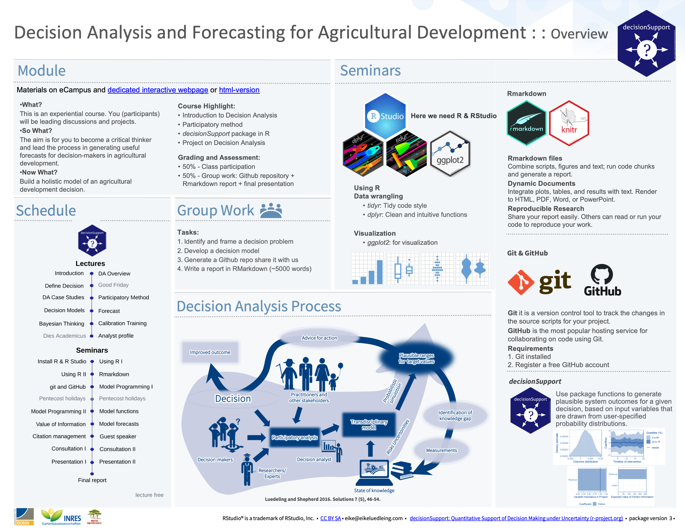

Lecture 1: Introduction


Welcome to Decision Analysis and Forecasting for Agricultural Development. We are excited to deliver you this course content and to train a new generation of experts in applying these tools. We see enormous scope for application of these methods in agriculture and the need for more practitioners. The course has a dedicated interactive website but if you prefer you can also look at the simple html version.
Decisions in agriculture are often risky, meaning that decision makers have uncertainty about how their decision will influence the intended outcomes. Farming systems are dynamic and the impact of any intervention, policy or management decision is likely to be influenced by many factors ranging from soil and crop dynamics to social dynamics such as farmer and community perceptions. In order to provide scientific support for decision making it is important that our models and forecasts attempt to include these interactions. Decision Analysis provides a set of approaches that are aimed at capturing what is known and applying this knowledge to generate forecasts of decision outcomes. The theoretical body of approaches have been formally applied in business and economics for more than 50 years Howard and Abbas (2015) and have been gaining ground in agricultural development research more recently Luedeling and Shepherd (2016). Our mission is to normalize these holistic approaches and move agricultural science from the lab bench and field trials to real world application and decision support for farmers and agricultural decision makers such as those in government ministries and aid organizations.
A student is not a vessel to be filled, but a lamp to be lighted… - Plutarch
What? This is an experiential course. You (participants) will be leading discussions and projects.
So What? The aim is for you to become a critical thinker and lead the process in generating useful forecasts for decision makers in agricultural development.
Now What? You will build a working model of an agricultural development decision.
Here is a course overview:

Course content
In this course, we will provide an overview of methods we can use to study agricultural development decisions and generate forecasts of decision outcomes. If you do not have a clear idea what that is you’ve come to the right place. This course was developed for MSc. students in Crop Sciences at the University of Bonn, but the materials are also intended for a general audience interested in applying these tools. The main parts of the course include:
- Introduction to Decision Analysis
- Calibration training
- Participatory modeling building
- Decision modeling in R
- Group project on decision analysis
See the official pages in the coursebook here Decision Analysis and Forecasting for Agricultural Development.
After some introduction of the subject matter much of this course
will consist of practical application of the decisionSupport
package in the R programming
language (R Core Team 2024).
Intended learning outcomes
In this course, we aim to provide you with the skills and experiences in decision modeling. By the end of this course you will be able to:
develop decision models and comprehensively evaluate the findings using the
Rprogramming language with functions from thedecisionSupportpackage (Luedeling et al. 2024).recognize your own biases and provide accurate range estimates for uncertain variables.
analyze a decision context. You will be able to draw conclusions from a decision model and recommend steps forward.
develop decision models, comprehensively evaluate your findings and compose a report about the model you developed.
Performance assessment
In this module, there will be no exam, but you’ll still have to put in a bit of effort to pass and get a good grade here. Over the course of the semester, you’ll be developing an Rmarkdown document, where you’ll record your learning and your coding work (here is an example from Hoa Do with an overview that includes the main modeling procedures with the decisionSupport package in R) (Luedeling et al. 2024). This document will contain short thematic chapters on the lecture contents, as well as the code you’ll produce and the outputs you’ll generate. The final chapters will contain some discussion of the results you’ll have obtained. This document will be evaluated, and it will be the major determinant of your final grade (participation in class will also count for some of the grade).
There will be about 60 hours of formal in-class time (15 ~ 4 hour lectures and seminars) and 120 hours of work outside the class.
What we expect from you
Class participation will be about 50% of the work in this course. We will expect you to show up in class and be an active participant in discussions. We may also have short weekly tests for seeing how up to speed you are and we will track your project activity (follow your git repositories etc.).
Group work will make up the rest of the required work for this course. You will put together a report, build a repository with code and a working RMarkdown file. You will also do weekly reading/listening assignments and lead short related discussions.
House rules
In this course, we’ll gradually work our way into the
decisionSupport package (Luedeling
et al. 2024). At the end of the semester, you should be able to
apply state-of-the-art Decision Analysis. Yet even if it’s not your
ambition to become a decision analyst, you’ll have picked up a bunch of
useful skills along the way. We’ll try to teach you how to use some
staple programming tools and techniques that can be used for all kinds
of programming challenges. These will include the use of git and github and Rmarkdown,
as well the the ability to create, manipulate and use R functions and
packages.
What is expected of you is to be engaged in this class, and to diligently complete the assignments you receive. Learning things in R requires practice, through which many things that seem cumbersome at first eventually become almost automatic. We are hopeful that the things you’ll get exposed to in this class will be assets in your scientific (or other) career. So please take the materials seriously!
This course not only aims to teach you things about Decision Analysis
and related topics - it also provides hands-on exercises to illustrate
the functions of the decisionSupport package Luedeling et al. (2024). For all of these
practical components, we need tools. decisionSupport is an
R package, so we’ll need R,
which is most comfortably operated through the RStudio interface.
We could simply start running RStudio on our local computer, save our files somewhere on our hard drive and generally operate the way we usually work with our computer. But this is not how real programmers work, and since this is what we’re trying to be, we should familiarize ourselves with some code development tools that such people use. We’ll therefore introduce you to git and github, which are very useful for keeping code organized and secure and for sharing with collaborators and wider audiences.
Finally, we want to show you how to properly document what you do in R, and how to compile professional-looking reports of your work. This is what Rmarkdown helps us do. Some of this may be a bit confusing in the beginning, but you’ll probably learn to appreciate the value of these tools, as we keep using them in this module.
Group Work
The course will be largely based on group work. Please take some time to choose a group to work with and begin to think about a decision. Over the next few weeks you will be responsible for the following milestones:
Identify a decision
Collaborate with decision makers on decision model development (qualitative)
Generate model code from qualitative model and parameterize (quantitative step)
Generate a git repo with code and documentation
Write a ~ 5,000 word paper in RMarkdown, see this report on plotting high-dimensional data for a useful example of how this can be done.
In addition, each week small teams (groups of two or three) will be responsible for presenting and leading a discussion on a short paper or chapter. We expect everyone in the course to read the work and come prepared for the meeting. Please contact us if you cannot find the readings in the library or elsewhere. We will help you get a copy.
Bonus video from Sir Ken Robinson
Bonus: to get more background on the teaching methods that inspire this course watch Sir Ken Robinson’s talk on Ted.com. If you like it you might enjoy reading his book ‘Out of Our Minds’ (Robinson 2017).
Lecture schedule
| Lecture | Date | Materials | Reading |
|---|---|---|---|
| 1 | Wednesday, April 10, 2024 | Introduction | Watch: Sir Ken Robinson / Hans Rosling (optional) |
| 2 | Friday, April 12, 2024 | Decision Analysis Overview | Hubbard (2014) (Chapter 1. The Challenge of Intangibles) |
| 3 | Wednesday, April 17, 2024 | Defining a Decision | Howard and Abbas (2015) (Chapter 1. Introduction to Quality Decision Making) |
| 4 | Friday, April 19, 2024 | Decision Analysis Case Studies | Shepherd et al. (2015) |
| 5 | Wednesday, April 24, 2024 | Participatory Methods | Luedeling and Shepherd (2016) |
| 6 | Friday, April 26, 2024 | Building Decision Models | Do, Luedeling, and Whitney (2020) |
| 7 | Friday, May 3, 2024 | Using Models to Create Forecasts | Tetlock and Gardner (2015) (Chapter 1. An Optimistic Skeptic) |
| 8 | Wednesday, May 8, 2024 | Bayesian Thinking | Bertsch McGrayne (2011) (Chapter 1. Causes in the Air) |
| 9 | Friday, May 10, 2024 | Calibrating experts | Kahneman and Egan (2011) (Chapter 1) |
| 10 | Friday, May 17, 2024 | Profile of a Decision Analyst | Savage and Markowitz (2009) (Chapter 1) |
Seminar schedule
| Week | Date | Materials | Assignment |
|---|---|---|---|
| 1 | Wednesday, May 28, 2024 | Using R and RStudio | Install R and Rstudio |
| 2 | Friday, May 31, 2024 | Using R and RStudio continued | Share R scripts (part 1) |
| 3 | Wednesday, June 5, 2024 | Group Work Overview | Share R scripts (part 2) |
| 4 | Friday, June 7, 2024 | Using RMarkdown | Share Rmarkdown file |
| 5 | Wednesday, June 12, 2024 | Using git and Github | Start a Github repo |
| 6 | Friday, June 14, 2024 | Model Programming | Share R scripts (part 3) |
| 7 | Wednesday, June 19, 2024 | Calibration training | Participate in calibration training |
| 8 | Friday, June 21, 2024 | Model functions | Share updated model |
| 9 | Wednesday, June 26, 2024 | Value of information | Share R scripts (part 3) |
| 10 | Friday, June 28, 2024 | Communicating Decision Support | |
| 11 | Wednesday, July 03, 2024 | Model forecasts | Share initial forecasts |
| 12 | Friday, July 5, 2024 | Citation Management | Join Zotero Group |
| 13 | Wednesday, July 10, 2024 | Guest Lecture | |
| 14 | Friday, July 12, 2024 | Consultation | |
| 15 | Wednesday, July 17, 2024 | Groups present / discuss final model | Present |
| 16 | Friday, July 19, 2024 | Presentations continued | Present |
Lecture 2: Decision Analysis Overview
“Everything is vague to a degree you do not realize till you have tried to make it precise.”
― Whitehead and Russell (2011)

Welcome to lecture 2 of Decision Analysis and Forecasting for
Agricultural Development. In this lecture we will follow a six-part
micro-series of videos and use the #lecture-02-overview
Slack channel and Zoom meeting to follow up. This will allow us all to
have a chance to see your progress, provide feedback. It will be
encouraging to others to see activity from colleagues. Feel free to
bring up any questions or concerns in the Slack or to Dr. Cory
Whitney or the course tutor.
Please take a few minutes to watch these six short videos and do the associated exercises. The slides will be shared in the respective Slack channels.
Introduction
The introduction outlines the general theory and application of Decision Analysis tools. At the end of the video please take a moment to think about decisions that are made in agricultural development, ideally decisions that are relevant to your research interests. Please share these with us in the Slack channel.
Remember to take a moment to gather your thoughts so far and share with us in Slack.
Part 1: Approaches
Part 1 gives an overview of various approaches in agricultural research and of the Decision Analysis paradigm. At the end of the video please take a moment to think about a situation where Decision Analysis might be applicable. Try and identify a decision maker with a choice between different options and with uncertainty about the outcome.
Remember to share a specific risky decision that might be supported with these tools. Share your ideas with us in Slack.
Part 2: Decision Analysis
Part 2 offers some background on the theory and development of Decision Analysis and how we apply it in agricultural decisions.
At the end of the video please take some time to think about a practical application of the kinds of approaches to dealing with uncertainty that are used in Decision Analysis. Describe a few variables that you consider difficult to measure but for which the effects on a decision might be possible to describe as uncertainty distributions. Share with us in Slack.
Part 3: Model Building
Part 3 gives an overview of model building processes and approaches.
At the end of this video take some time to draw a decision impact pathway. Draw a conceptual diagram of an agricultural development decision. Include the major factors that would influence the decision, no matter how difficult they might be to measure. Feel free to use any program you like to make this drawing. Loopy is a very nice interface. Google Slides, Biorender are also good options. For the more advance R users you might like the igraph library. For those who prefer analog, a photo or scan of a hand drawn diagram is also welcome. Be sure to save your work and share it with us in Slack, a screen shot is fine, a working link is even better.
Part 4: Overcoming Bias
Part 4 gives an overview of various types of cognitive biases and outlines how these can interfere with the definition of and parameterization of models. The session ends with a number of approaches that can be applied to help in overcoming these biases and outlines the calibration training process whereby experts are trained to give accurate estimates of their own uncertainty.
At the end of the video please take some time to consider the variables in your conceptual diagram that might benefit from calibrated estimates. Describe variables in your model that might be difficult to measure but the effects of which might be possible to describe with calibrated-expert derived uncertainty distributions.
Parts 5 and 6: Case Studies, Conclusions
Parts 5 and 6 offer some brief Decision Analysis case studies and conclusions. At the end of the video please take some time to revisit your model and consider these approaches in practice. Feel free to discuss in Slack about what application these approaches might have with regard to your research.
Group discussion reading:
This week you will all read Hubbard (2014) (Chapter 1, pp 1-14). The first group will lead a discussion on the reading.
- Hubbard, Douglas W. How To Measure Anything: Finding the Value of Intangibles in Business. 2nd ed. Vol. Second Edition. Hoboken, New Jersey: John Wiley & Sons, 2014. Part 1:The measurement solution exists
Bonus video by Professor Karl Claxton
Bonus: to get an economist’s perspective on the Decision Analysis approaches watch ‘Lessons from applying decision science in the public health sector’ by Professor Karl Claxton in the Constructing a Digital Environment Webinar Series. The talk gets really interesting at around eight minutes in.
Lecture 3: Defining a Decision

The following videos cover some of the challenges that researchers and agricultural development experts face when attempting to define decisions. Please watch the videos and answer the questions that follow.
Defining Decisions Part 1
Defining Decisions Part 2
Think about the following questions and jot down your thoughts.
- Does decision analysis make sense without involving a decision-maker?
- What can this achieve, and what shouldn’t we expect from it?
Defining Decisions Part 3
Think of challenges you may encounter when trying to do credible, salient and legitimate research (all of which decision analysts should aim to achieve).
Quality Decision Making
This video outlines the background for quality decision making, closely following Howard and Abbas (2015). At the end of the video please take some time to sketch out some thoughts about a decision that you will be working on for the experiential part of this course. You can find the slides for the first three parts of the lecture here.
- Define the decision-maker: The person, organization or group that will be faced with choices.
- Define the decision choice and alternatives: from which to choose
- Define the preferences: clarify how the decision-makers consider the different possible consequences and outcomes of the decision. These can take many forms, i.e. they can be personal, societal or cultural values.
- Define the sources of Information: What sources of information will you access to gather a causal understanding of the decision impact pathway. Be explicit about where you will reach out, i.e. specific farmers, literature etc.
Group discussion reading:
This week you will all read Howard and Abbas (2015) (Chapter 1. Introduction to Quality Decision Making). One group will lead a discussion on the reading.
Reading for this lecture
- Howard, Ronald A., and Ali E. Abbas. Foundations of Decision Analysis. NY, NY: Prentice Hall, 2015.
Bonus reading by Shepherd et al. (2015).
- Shepherd, Keith, Douglas Hubbard, Norman Fenton, Karl Claxton, Eike Luedeling, and Jan de Leeuw. “Development Goals Should Enable Decision-Making.” Nature 523, no. 7559 (2015): 152–54.
Lecture 4: Decision Analysis Case Studies
Welcome to lecture 4 of Decision Analysis and Forecasting for
Agricultural Development. In this lecture we will follow three
case studies and use the #lecture-04-case-studies Slack
channel and Zoom meeting to follow up. This will allow us all to have a
chance to see your progress, provide feedback. As always, your
engagement and sharing is appreciated. It will be encouraging to others
to see activity from colleagues. Feel free to bring up any questions or
concerns in the Slack or to Dr. Cory
Whitney or the course tutor.
Please take a few minutes to watch these short videos and do the associated exercises before our meeting.
Introduction
The following videos introduce some decision analysis case studies. Please watch the videos and answer the questions that follow.
Decision analysis case - Water for Wajir
The city of Wajir in Northern Kenya has lacks a reliable supply of clean drinking water and sanitation. To improve the situation, plans are being considered to construct a water pipeline from Habaswein over 100 km away (Luedeling and Leeuw 2014; Luedeling et al. 2015). Watch the following video to learn more.
Now try to answer the following questions:
Case study - Plastic covers in sweet cherry orchards in Chile
This video shows the study Rojas et al. (2021) conducted in Chile for assessing the profitability of implementing plastic covers in sweet cherry orchards to protect the fruits from hazardous weather events.
Based on the question above, think about and write down two to three positive and negative implications of using the method we used to define the decision.
The data and scripts for this study are also available online (Fernandez et al. 2021).
Group discussion reading:
- Luedeling, Eike, and Keith Shepherd. “Decision-Focused Agricultural Research.” Solutions 7, no. 5 (2016): 46–54.
Lecture 5: Participatory Methods For Qualitative Model Development
Participatory methods
The following video outlines some of the tools that can be used in participatory modeling. Watch the video and answer the questions that follow.
Stakeholder management
The following video covers some definitions, methods and tools and a case study related to stakeholder management in decision analysis. Please watch the videos and answer the questions that follow. These will be helpful in determining which tools/techniques you might use to identify stakeholders in your decision analysis process.
Group discussion reading:
Luu et al
Further Reading
Liberating Structures by Keith McCandless (and others)
Reed, M. S. et al. (2009) ‘Who’s in and why? A typology of stakeholder analysis methods for natural resource management’, Journal of Environmental Management, 90(5), pp. 1933–1949. doi: 10.1016/j.jenvman.2009.01.001.
Lecture 6: Building Decision Models
Welcome to lecture 6 of Decision Analysis and Forecasting for Agricultural Development. We will walk through brief examples and offer the scripts. Feel free to bring up any questions or concerns in the Slack, to Dr. Cory Whitney or to the course tutor.
Decision-makers often wish to have a quantitative basis for their decisions. However,‘hard data’ is often missing or unattainable for many important variables, which can paralyze the decision-making processes or lead decision-makers to conclude that large research efforts are needed before a decision can be made. That is, many variables decision makers must consider cannot be precisely quantified, at least not without unreasonable effort. The major objective of (prescriptive) decision analysis is to support decision-making processes faced with this problem. Following the principles of Decision Analysis can allow us to make forecasts of decision outcomes without precise numbers, as long as probability distributions describing the possible values for all variables can be estimated.
The decisionSupport package implements this as a Monte
Carlo simulation, which generates a large number of plausible system
outcomes, based on random numbers for each input variable that are drawn
from user-specified probability distributions. This approach is useful
for determining whether a clearly preferable course of action can be
delineated based on the present state of knowledge without the need for
further information. If the distribution of predicted system outcomes
does not imply a clearly preferable decision option, variables
identified as carrying decision-relevant uncertainty can then be
targeted by decision-supporting research. This approach is explained in
more detail below and in the model
programming seminar.
In this portion of the course we hope to introduce you to the methods and inspire you to follow a few important guidelines in the process of model building. One of the key aspects of model building has to do with making a solid business case for the model before programming.
Another important guideline is to start simple then move on to other steps. This ensures that you always have a working model at each of the steps in the process, i.e. starting with a skateboard rather than a car part as in this example from MetaLab.
Bonus: Further reading
Whitney et al. (2018) ‘Probabilistic decision tools for determining impacts of agricultural development policy on household nutrition’.
Ruett, Whitney, and Luedeling (2020) ‘Model-based evaluation of management options in ornamental plant nurseries’
Lecture 7: Using Models to Create Forecasts
Welcome to lecture 7 of Decision Analysis and Forecasting for Agricultural Development. We will walk through brief examples and offer the scripts. Feel free to bring up any questions or concerns in the Slack or to Dr. Cory Whitney or the course tutor.
Group discussion reading:
- Tetlock, Philip E., and Dan Gardner. Superforecasting: The Art and Science of Prediction. New York, NY: Crown Publishers, 2015.(Chapter 1. An Optimistic Skeptic)
Lecture 8: Bayesian Analysis Practical
Confronting expert calibrated models with data
Welcome to the lecture on Bayesian modeling with me, Dr. Katja
Schiffers. Although we mainly implement these methods in our group
for decision analysis, we do not want to withhold the Bayesian Modeling
approaches from you. Originally, I prepared this introduction for a
seminar on the analysis of experimental data, so the focus is more on
comparing frequentist and Bayesian statistics than on decision models.
In this lecture we will use the brms package and use the
#lecture_08_01_practical Slack channel to follow up. This
will allow us all to have a chance to see your progress, provide
feedback. As always, your engagement and sharing is appreciated. It will
be encouraging to others to see activity from colleagues. Feel free to
bring up any questions or concerns in Slack or to Dr. Cory
Whitney or the course tutor.
The following text heavily relies on a very well-written article “Short introduction to Bayesian statistics with R for ornithologists” (2016) by Fränzi Korner-Nievergelt & Ommo Hüppop in ‘Die Vogelwarte’. At the end of the lecture, you will know
- the principle of Bayesian statistics,
- ways to apply it using the R package ‘bmrs’, and
- the differences between frequentist and Bayesian statistics regarding the interpretation of results.
Bayes’ theorem
No introduction to Bayesian statistics is complete without Bayes’ theorem. Thomas Bayes was an English clergyman, philosopher, and statistician who, in 1763 published a manuscript entitled “An essay towards solving a problem in the doctrine of chances.” In this work, he describes how, based on existing knowledge and additional observations X, the probability can be calculated that a hypothesis H is true:
\[P(H|X) = \frac {P(X|H)×P(H)}{P(X)}\]
In words, the probability (P) that the hypothesis is true, given the observed data (P(H|X), a-posteriori knowledge), is equal to the probability of observing the data, assuming the hypothesis is true (P(X|H), likelihood), times the prior probability that the hypothesis is true before observing the data (P(H), a-priori knowledge or prior), divided by the probability of observing the data regardless of any assumptions about the hypothesis (P(X), normalization constant).
It is important to note that hypotheses are expressed as parameter values. For example, if our hypothesis is that the mean of a dependent variable is greater under treatment A than under treatment B, we would calculate the probability for the parameter mean(A) - mean(B) and obtain the probability that it is greater than zero.
The principle of Bayesian statistics
In Bayesian statistics, this idea is used to combine prior knowledge from experts/literature (P(H)) with the information contained in newly collected data X to generate the updated a-posteriori knowledge. We also see that as a result, we obtain the probability of our hypothesis. This is much more digestible and closer to our “normal” way of thinking than interpreting a p-value: “The probability of finding data as extreme as this or more extreme, if the null hypothesis is true.”
Excursion: Probability distributions
To represent probabilities, such as prior knowledge, probability distributions are used. In the following figure, you can see such a probability distribution: the higher the density, the more likely the parameter value plotted on the x-axis. The total area under the curve always adds up to 1 (exactly some parameter value must always be true).

So how do we calculate this probability? Unfortunately, it’s usually not as straightforward as it seems. While we can usually calculate the likelihood (this is also done in frequentist statistics to determine the parameter values of our models) and establish our a-priori knowledge through a probability distribution, things get tricky with the P(X) part, the probability of the data, at least once we no longer have very simple models. To do this, we would have to integrate the probability of the data over all possible parameter values, and this is often not possible. Fortunately, this problem can be overcome with a simulation technique developed in the 1980s and 1990s:
MCMC - Markov Chain Monte Carlo
MCMC methods can approximate probability distributions (in this case, P(H|X)) that cannot be analytically computed. The most intuitive and quite ingenious explanation I found for this is by Michael Franke on his Github page at https://michael-franke.github.io/intro-data-analysis/Ch-03-03-estimation-algorithms.html. Here are some parts of it:

How the Apples Get to the Trees
Every year in spring, Mother Nature sends out her children to distribute apples on the apple trees. For each tree, the number of apples should be proportional to the number of leaves: Giant Ralph with twice as many leaves as Skinny Daniel should also have twice as many apples in the end. So if there are a total of \(n_a\) apples, and \(L(t)\) is the number of leaves on tree \(t\), each tree should receive \(A(t)\) apples.
\[A(t) = \frac {L(t)}{\sum L(t')}n_a\]
The problem is that Mother Nature cannot calculate \(\sum L(t')\) (the normalization constant), so she doesn’t know how many leaves all the trees have together.
The children (Markov chains) can count, however. They can’t visit all the trees and they can’t remember the numbers for very long, but they can do it for two trees at a time. Here’s what they do: they each start at a random tree (parameter value), already put an apple in it, count the leaves \(L(t_1)\) there and then look for a nearby tree from which they can also count the leaves \(L(t_2)\) (the denominator of our distribution). If the number of leaves in the second tree is higher, they will definitely go there and put an apple in it. If it’s lower, they will only go there with a probability of \(L(t_2)/L(t_1)\) and put an apple there. They keep walking back and forth between the trees, and in the end, the apples are roughly evenly distributed. The frequency of visits by the children has therefore approximated the desired distribution (which Mother Nature couldn’t calculate)!
MCMC methods do the same thing: an MCMC chain randomly draws values
for the model parameters and computes
Result1 = Likelihood of the data * Prior for them. Then it
draws values randomly around the first ones and computes
Result2 = Likelihood of the data * Prior for them. If
Result2 is higher than Result1, it jumps there
and draws new parameter values from there. If Result2 is
lower, it only jumps there with a probability of
Result2/Result1. Then, values are drawn randomly again, and
so on. In the following figure, successful jumps are represented by blue
arrows and rejected jumps by green arrows.

If this process is continued long enough, the distribution of the blue dots approaches the posterior probability distribution of the parameters that we want: We have combined a priori knowledge with the information contained in the newly collected data to successfully obtain posterior knowledge!
A (somewhat contrived) example.
We need to decide which chicken breed we want to keep in our orchard. We already have 3 Kraienköppe and 6 Niederrheiner. We prefer the Niederrheiner because they are less aggressive, but the Kraienköppe seem to have a slightly higher egg-laying performance. Is it really advisable to choose Kraienköppe because of this tendency?
1: Definition of the A-priori-probability distribution
We inquire about the egg production of the two breeds and learn that
Niederrheiners lay between 190 and 210 eggs per year, while Kraienkoppes
lay between 200 and 220. Accordingly, we formulate our prior probability
distributions using the brms package:
library(brms)
To get the brms library to work as expected you may need
the latest rstan and StanHeaders. Run
install.packages("rstan").
install.packages("StanHeaders"). You may also need to set
up the connection with these libraries with
options(mc.cores = parallel::detectCores()) and
rstan_options(auto_write = TRUE).
We define 2 normal distributions using the function set_prior, one with a mean of 200 and a standard deviation of 1.5, and another with a mean of 210 and a standard deviation of 1.5. We specify under ‘coef’ which parameters in the model that we later formulate these priors belong to.
priors <- c(set_prior("normal(200, 5)", coef = "rasseN"), set_prior("normal(210, 5)", coef = "rasseK"))
Plot them, to get a feeling of the priors:
curve(dnorm(x, 200, 5), from = 170, to = 230, xlab="egg production", ylab="density")
2. Collecting new data
Now we report our own observations of the egg-laying performance of the 3 Kraienköppe and 6 Niederrheiners from the previous year:
rasse <- c("K", "K", "K", "N", "N", "N", "N", "N", "N")
ll <- c(225, 222, 221, 219, 219, 216, 221, 218, 217)
daten <- data.frame(rasse=rasse, ll=ll)
3. Combining the prior distribution with the data to obtain the posterior distribution
To estimate the posterior distribution, we use the ‘brm’ function of
the brms package. As we know from other evaluations, we
first formulate our model, namely that the egg-laying performance
ll depends on the breed. The -1 in the model
formula causes the model to estimate the mean egg-laying performance for
both breeds rather than just the mean for the first breed and the
difference to it. Under data, we enter our own collected
data and under prior, we define the above priors. The
silent argument determines how much information is output
to the console when the MCMC chains start running. Depending on the
complexity of the model, these simulations can take several seconds or
minutes.
Make the model
legeleistung <- brms::brm(formula = ll ~ rasse -1, data = daten , prior = priors, silent = 2)
4. Interpretation
The above code has performed the MCMC simulation and we can now examine the posterior distributions for the laying performance of the chicken breeds:
Print the summary summary(legeleistung)
The summary first shows us our inputs and some information about the Markov chains. Most interesting to us are, of course, the estimates for rasseK and rasseN and their credibility intervals. As you can see, the confidence intervals overlap: the lower value of rasseK (l-95%) is about 218, which is smaller than the upper value (u-95%) of about 219 for rasseN, which lays fewer eggs.
Sigma is the estimated standard deviation of the assumed normal distribution and is less relevant to us here.
plot(legeleistung)
In the figure, the results are even easier to interpret. On the left, you can see the a-posteriori distributions for both breeds (note that the x-axes of the top two distributions are not aligned). To the right of that are the dynamics of the Markov chains.
From the a-posteriori distributions, we could now also calculate the exact probability that the egg-laying performance really is different. However, since we have already seen that the credibility intervals overlap, we stick to our preference for the Niederrheiners, even though it is not ruled out that they lay a few eggs less.
Frequentist versus Bayesian
| Frequentist | Bayesian |
|---|---|
| Probability of data, in relation to hypothesis | only yes/no answer |
| Confidence interval: in which interval do we expect 95% of the means of further random samples of the same sample size | Credibility interval: in which range of values does the true population mean lie with a probability of 95% |
| Assumption that there is one ‘true’ value, but observations lead to a distribution | Assumption that the observed values are true and have an intrinsic variance |
The easier interpretability of Bayesian analyses is best illustrated by the following figure:
![Source: Korner-Nievergelt und Hüppop (2016). Five possible results of estimating an effect, such as the difference in yield with different fertilization. The dots indicate the estimated differences, the vertical bars indicate the 95% uncertainty intervals (confidence interval or credible interval). The results of the corresponding null hypothesis test are shown in the first row. The second row shows the posterior probability for the hypothesis that the effect is “economically relevant”. The background color distinguishes “economically relevant” (orange) from “economically not relevant” (light blue) effect sizes schematically.](images/effektgroesse.png)
An uncritical frequentist approach would result in: “The effect in group/treatment A and E is significant, so we will use the tested fertilizer for those groups. There seems to be no effect in the other groups.”
However, there is an important effect in group B as well, and even though the effect in group E is statistically significant, the effect size on yield is so small that it probably does not make economic sense to fertilize additionally.
The results of the Bayesian analysis (i.e., the probabilities for the hypothesis that there is an effect) much more directly reflect these interpretations.
Lecture 8.1: Bayesian Thinking
Welcome to Decision Analysis and Forecasting for Agricultural Development. Feel free to bring up any questions or concerns in the Slack or to Dr. Cory Whitney or the course tutor.
Please watch the video and answer the multiple choice questions below.

Summarize for yourself the difference between the frequentist and the Bayesian approach to knowledge generation. Which one do you feel more comfortable about? Are you ready to become a Bayesian?
Group discussion reading:
- Bertsch McGrayne (2011) `The theory that would not die’ (Chapter 1. Causes in the Air)
Lecture 9: Calibrating experts
Welcome to lecture 9 of Decision Analysis and Forecasting for Agricultural Development. Feel free to bring up any questions or concerns in the Slack or to Dr. Cory Whitney or the course tutor.
The following videos tell you something about a method which is frequently used in our group to get reliable values for the input tables from our stakeholders. Please watch the videos and answer the questions that follow.
What is calibration training?
Why do we apply calibration training?
Group discussion reading:
- Chapter 1. Kahneman, Daniel, and Patrick Egan. Thinking, Fast and Slow. Vol. 1. New York: Farrar, Straus and Giroux, 2011.
Bonus Material
Watch the video and do the awareness test!
Have a look at Terry Heick’s Cognitive Bias codex.
Lecture 10: Profile of a Decision Analyst
Welcome to lecture 10 of Decision Analysis and Forecasting for Agricultural Development. Feel free to bring up any questions or concerns in the Slack or to Dr. Cory Whitney or the course tutor.
Those who work in Decision Analysis must be able to do a number of diverse jobs from the facilitation and integration of ideas into models and also in programming these models. In the following short lecture you will learn about the skills that are particularly important for integration of knowledge, facilitation of knowledge gathering processes and for programming decision models. Please watch the video and answer the multiple choice questions below.
Reading
This week we will read and discuss Chapter 1 of ‘The Flaw of Averages’ by Savage and Markowitz (2009).
-Savage, Sam L., and Harry M. Markowitz. The Flaw of Averages: Why We Underestimate Risk in the Face of Uncertainty. John Wiley & Sons, 2009.
Bonus reading
Sam Savage’s article The Flaw of Averages in the Harvard Business Review.
Seminar 1: Using R and RStudio
Welcome to Decision Analysis and Forecasting for Agricultural Development. Feel free to bring up any questions or concerns in the Slack or to Dr. Cory Whitney or the course tutor.
Remember that this is an experiential course and will be based largely on work from your side that is supported by us, rather than passive learning where we deliver content. In order to work with us in this course you will need to have some basic tools.
The first step in getting ready for the work of this course is to install and run R (R Core Team 2024) and RStudio.
If you already have R and RStudio loaded then you should be able to follow parts our R tutorial. Please follow Data Wrangling Part one and Data Wrangling Part two portions of the tutorial. Share the results of your work with the ‘ggplot2’ ‘diamonds’ data (Wickham et al. 2024) after you have worked through these materials.
Further Reading
- Check out the R Studio Tidyverse style guide
Seminar 2: Using R and RStudio Continued
You should already have installed R and RStudio. If not, please check
out the tools we use in this course. If you
already have R and RStudio loaded then you should be able to follow this
Data
Visualization section of the R tutorial. Share the results of your
work with a data set of your choice (i.e. ggplot2
diamonds data (Wickham et al.
2024)) after you have worked through these materials.
Lifestyle choices
If you run the code usethis::use_blank_slate() in your
console it will set your RStudio preference to NEVER
save or restore .RData on exit or on startup, which is a
lifestyle choice endorsed by many excellent researchers like Jenny Bryan.
Seminar 3: Model Updates
Participants shared conceptual models and recieved feedback.
See Slack
Seminar 4: Using RMarkdown
Using RMarkdown
RMarkdown: overview

Now let’s check out Rmarkdown, a powerful tool that allows making fancy reports, websites etc. out of our R code (Allaire et al. (2024)). You’re already looking at an example, by the way. This website was produced with Rmarkdown (and it wasn’t hard at all)!
Here are the slides and the html file generated in the video.
To run this you will need to load library(rmarkdown)

and library(knitr)

- Use RMarkdown!
- You will thank yourself
- Save often with new version (or use git)
RMarkdown: getting stuck
- Use a ‘?’ with function, package, data name in the R console
- If you get stuck, use Google: just add “R” to a search e.g. a copy of an error message
- Someone else has also been confused by it and has written about it
- Thousands of talented programmers scan the web and answer these problems
RMarkdown: basics
https://rmarkdown.rstudio.com/authoring_basics.html
https://bookdown.org/yihui/rmarkdown/r-code.html
- Open RStudio
- Open an Rmarkdown file and knit.


Now we’re equipped with all the basic tools for this course. We’ll start using them pretty soon. Throughout the course you’ll find occasional references to your RMarkdown file. This is supposed to be produced with Rmarkdown, with subsequent versions of it stored on Github.
Seminar 5: Using git and Github
Welcome to the fourth seminar of Decision Analysis and Forecasting for Agricultural Development. All your programming and project work for this course should take place in the git environment and this seminar is intended to show you how to make that happen. Feel free to bring up any questions or concerns in the Slack or to Dr. Cory Whitney or the course tutor.
Git and Github
Now we look at the programming version control environment git and the interface github, which we use to share our scripts and changes to our work.
Install Git & join Github (if you have not already):
- install Git https://git-scm.com/downloads
Important note for Windows users: when you download
Git, it may be installed into your Program Files directory
by default. This often causes issues later. The general recommendation
is to choose a different directory for installing,
i.e. C:/Users/username/bin/. Once Git is installed, open
RStudio, and go to Tools > Global Options, select
Git/SVN, and then enter or select the path for your Git
executable.
- join Github https://github.com/
Some useful tips on getting these running from our friends
University of Zurich http://www.geo.uzh.ch/microsite/reproducible_research/post/rr-rstudio-git/
Nathan Stephens, a very helpful R blogger
https://support.rstudio.com/hc/en-us/articles/200532077-Version-Control-with-Git-and-SVNR For the Rest of us Learn the essentials of using Git and GitHub with RStudio. This guide explains how to integrate version control into your R projects for better collaboration. https://rfortherestofus.com/2021/02/how-to-use-git-github-with-r/
Start simple with your own repository only and work on it alone. Share your profile and link to a repository you made in the Slack channel for this seminar. Soon you will start to collaborate on something in git. For the project part of this course your team will work in a collective repository and work together to generate the final working project model and report.
Bonus: Sharing html files
We can use the options from htmlpreview.github.io to
show the results of any of our html output work that is stored in our
git repository.
To do that just preface the path for the html file with
http://htmlpreview.github.io/?.
For example the slides for this seminar can be found in the
CWWhitney/teaching_git repository.
The full path is:
https://github.com/CWWhitney/teaching_git/blob/master/R_Git_GitHub.html
and the link to this to be viewed directly as a web page is: http://htmlpreview.github.io/?https://github.com/CWWhitney/teaching_git/blob/master/R_Git_GitHub.html
Bonus: Further Reading
Best practices for using Git from deepsource.io. Note that we break rule number five when we share the html files in the Git repository. That can be our secret.
Watch the ‘What is GitHub’ video from the GitHub developers
Seminar 6: Model Programming
Welcome to the model programming seminar of Decision Analysis
and Forecasting for Agricultural Development. In this seminar
we will look into different options for model programming in the
R programming environment (R Core
Team 2024). In case you have not already installed R
and RStudio you may want to go back to the Using R and Rstudio seminar and follow the
instructions there. Feel free to bring up any questions or concerns in
the Slack or to Dr. Cory
Whitney or the course tutor.
Remember to start simple then move on to other steps, make sure that you always have a working model at each of the steps in the process, i.e. starting with a skateboard rather than a car part as in this example from MetaLab.
Monte Carlo Simulation of Apples and Sheep Agroforestry
Follow this hypothetical example of a silvopastoral system as your first Monte Carlo simulation in base R.

In this video we walk you through the process of running this model. Please follow along and write your own R script. If you ask nicely we might also share the R script.
Seminar 7: Model Programming continued
Welcome to the second seminar on model programming Decision
Analysis and Forecasting for Agricultural Development. In this
seminar we will look into different options for model programming in the
R programming environment (R Core
Team 2024). In case you have not already installed R
and RStudio you may want to go back to the Using R and Rstudio seminar and follow the
instructions there. Feel free to bring up any questions or concerns in
the Slack or to Dr. Cory
Whitney or the course tutor.
Decision analysis with the decisionSupport package
As we have discussed in previous lectures, when deciding on
intervention in complex systems, many of the variables decision makers
need to consider are difficult or impossible to precisely quantify. The
decisionSupport package (Luedeling
et al. 2024) can make use of uncertainty around these
relationships and implement a Monte Carlo simulation, which generates a
large number of plausible system outcomes. The model procedure draws
random numbers for each input variable, which are drawn from specified
probability distributions. The method requires two inputs to the
mcSimulation function:
an R function that predicts decision outcomes based on the variables named in a separate data table. This R function is customized by the user to address a particular decision problem.
an input table (normally in
comma separated valuesformat, ending in.csv) specifying the names and probability distributions for all variables used in the decision model. These distributions aim to represent the full range of possible values for each component of the model.
The mcSimulation function from the
decisionSupport package conducts a Monte Carlo analysis
with repeated model runs based on probability distributions for all
uncertain variables. The data table and model are customized to fit the
particulars of a specific decision.
Building a decision model as an R function
We have already built some simple models in the Decision Models lecture and the Model programming seminar.
First we generate a model as a function. We use the
decisionSupport functions vv() to produce time
series with variation from a pre-defined mean and coefficient of
variation, chance_event() to simulate whether events occur
and discount() to discount values along a time series.
decisionSupport package in R
We have just learned about the processes and methods of generating Decision Models. Now we can explore
some of the packages that we commonly use in R. The main
package that our team uses for simulations is the
decisionSupport. In order to use the standard tools for
running these models in the R environment you will need to load the
decisionSupport library. Use the
install.packages function,
i.e. install.packages("decisionSupport").
library(decisionSupport)Building the model

Here we generate an input table to feed the model function. Update
this to include the management cost variable in the graphical impact
pathway above. Call your new variable "Management_cost",
make the lower bound 100 and the upper bound
2000, make the distribution "posnorm", make
the label "Management cost (USD/ha)" and make the
description "Management costs in a normal season".
input_estimates <- data.frame(variable = c("Yield", "Market_price", "Labor_cost"),
lower = c(6000, 3, 500),
median = NA,
upper = c(14000, 8, 1000),
distribution = c("posnorm", "posnorm", "posnorm"),
label = c("Yield (kg/ha)", "Price (USD/kg)", "Labor cost (USD/ha)"),
Description = c("Yield in a sweet cherry farm under normal conditions",
"Price of sweet cherry in a normal season",
"Labor costs in a normal season"))
input_estimatesinput_estimates <- data.frame(variable = c("Yield", "Market_price", "Labor_cost", "Management_cost"),
lower = c(6000, 3, 500, 100),
median = NA,
upper = c(14000, 8, 1000, 2000),
distribution = c("posnorm", "posnorm", "posnorm", "posnorm"),
label = c("Yield (kg/ha)", "Price (USD/kg)", "Labor cost (USD/ha)", "Management cost (USD/ha)"),
Description = c("Yield in a sweet cherry farm under normal conditions",
"Price of sweet cherry in a normal season",
"Labor costs in a normal season",
"Management costs in a normal season"))
input_estimatesHere we use the mcSimulation function from the
decisionSupport package to implement a model (Luedeling et al. 2024). The model function that
describes the graphical impact pathway. Add a new line of code that
summarizes the Labor_cost and Management_cost
into overall_costs, then subtract these from the
income to calculate final_result.
model_function <- function(){
# Estimate the income in a normal season
income <- Yield * Market_price
# Estimate the final results from the model
final_result <- income - Labor_cost
# Generate the list of outputs from the Monte Carlo simulation
return(list(final_result = final_result))
}
# Run the Monte Carlo simulation using the model function
example_mc_simulation <- mcSimulation(estimate = as.estimate(input_estimates),
model_function = model_function,
numberOfModelRuns = 800,
functionSyntax = "plainNames")
example_mc_simulationmodel_function <- function(){
# Estimate the income in a normal season
income <- Yield * Market_price
overall_costs <- Labor_cost + Management_cost
# Estimate the final results from the model
final_result <- income - overall_costs
# Generate the list of outputs from the Monte Carlo simulation
return(list(final_result = final_result))
}
# Run the Monte Carlo simulation using the model function
example_mc_simulation <- mcSimulation(estimate = as.estimate(input_estimates),
model_function = model_function,
numberOfModelRuns = 800,
functionSyntax = "plainNames")
example_mc_simulationHere we show the results of a Monte Carlo simulation (800 model runs) for estimating the profits in sweet cherry orchards.
Change the plot to a histogram by using the method
argument in the plot_distributions function.
plot_distributions(mcSimulation_object = example_mc_simulation,
vars = "final_result",
method = "boxplot_density",
old_names = "final_result",
new_names = "Outcome distribution for profits")plot_distributions(mcSimulation_object = example_mc_simulation,
vars = "final_result",
method = "hist_simple_overlay",
old_names = "final_result",
new_names = "Outcome distribution for profits")Testing with make_variables
You could simply start further developing the decision model now, but
since the model function will be designed to make use of variables
provided to it externally (random numbers drawn according to the
information in the data table), you will need to define sample values
for all variables, if you want to test pieces of the function code
during the development process. This can be done manually, but it’s more
easily accomplished with the following helper function
make_variables:
make_variables <- function(est,n=1)
{ x<-random(rho=est, n=n)
for(i in colnames(x)) assign(i,
as.numeric(x[1,i]),envir=.GlobalEnv)
}This function is not included in the decisionSupport
package, because it places the desired variables in the global
environment. This is not allowed for functions included in packages on
R’s download servers.
Applying make_variables and as.estimate to
the data table (with default setting n=1) generates one
random number for each variable, which then allows you to easily test
the code you are developing. Try running this function on your code as
you build the decision function. This allows for testing the values
within a model rather than running the full model.
Run the make_variables and as.estimate on
the input_estimates input table that we created and then
calculate the result of Labor_cost + Management_cost given
a single random value for these variables. Note that each time
you run this code it generates a new random draw and produces a
different number from within the range for the variables in the input
table.
make_variables(as.estimate(input_estimates))
Market_pricemake_variables(as.estimate(input_estimates))
Labor_cost + Management_costNext steps
Once you have followed and run the code above on your machine it is a
good time to look through the outline of these procedures in the
decisionSupport vignette on the CRAN called ‘Applying
the mcSimulation function in decisionSupport’ (Fernandez, Whitney, and Luedeling 2021). This
will show you how the tools can be applied for comparing decision
outcomes. It runs a Monte-Carlo-based selection of sedimentation
management strategies for a reservoir in the Upper Volta River Basin of
Burkina Faso (Lanzanova et al. 2019). Tip:
If you want to play with this code you can find the Rmarkdown
file and the estimate
table in the decisionSupport GitHub repository.
Taken together, all these outputs allow an evaluation of the plausible range of net benefits that can be expected to arise from the decision. They provide a recommendation on which decision option should be preferred, and an appraisal of which input variables are responsible for most of the variation in the output distribution.
Bonus: Bayesian modeling application
Listen to this interview on Alex Andorra’s podcast ‘Learning Bayesian Statistics’, How to use Bayes in industry, with Colin Carroll
Causal model / diagram / Impact pathway / Theory of change
Before you start developing the decision model (an R function), open
R and download and load the decisionSupport package.
install.packages("decisionSupport")
library(decisionSupport)Creating a model
The mcSimulation function from the
decisionSupport package can be applied to conduct decision
analysis (Luedeling et al. 2024). The
function requires three inputs:
- an
estimateof the joint probability distribution of the input variables. These specify the names and probability distributions for all variables used in the decision model. These distributions aim to represent the full range of possible values for each component of the model. - a
model_functionthat predicts decision outcomes based on the variables named in a separate data table. This R function is customized by the user to address a particular decision problem to provide the decision analysis model. numberOfModelRunsindicating the number of times to run the model function.
These inputs are provided as arguments to the
mcSimulation function, which conducts a Monte Carlo
analysis with repeated model runs based on probability distributions for
all uncertain variables. The data table and model are customized to fit
the particulars of a specific decision.
The estimate
To support the model building process we design an input table to
store the estimate values. The table is stored locally as
example_decision_inputs.csv and contains many of the basic
values for the analysis. This table contains all the input variables
used in the model. Their distributions are described by 90% confidence
intervals, which are specified by lower (5% quantile) and upper (95%
quantile) bounds, as well as the shape of the distribution. This example
uses four different distributions:
const– a constant valuenorm– a normal distributiontnorm_0_1– a truncated normal distribution that can only have values between 0 and 1 (useful for probabilities; note that 0 and 1, as well as numbers outside this interval are not permitted as inputs)posnorm– a normal distribution truncated at 0 (only positive values allowed)
For a full list of possible distributions, type
?random.estimate1d in your R console. When specifying
confidence intervals for truncated distributions, note that
approximately 5% of the random values should ‘fit’ within the truncation
interval on either side. If there is not enough space, the function will
generate a warning (usually it will still work, but the inputs may not
look like you intended them to).
We have provided default distributions for all the variables used
here, but feel free to make adjustments by editing the .csv file in a
spreadsheet program. You can download the ‘example_decision_inputs.csv’
here and save it as a .csv file locally (from your web browser try: File
> Save page as). In this example it is stored in the ‘data’ folder.
Once you have downloaded the data you can run
example_decision_inputs <- read.csv("data/example_decision_inputs.csv")
in your console to make the following code work on your machine. Note
that the input table that can be written or read from a .csv file and
calculated with the estimate_read_csv function or converted
to the correct format with the as.estimate function.
The model_function
The decision model is coded as an R function which takes in the variables provided in the data table and generates a model output, such as the Net Present Value.
Create a simple function
Here we define a simple model function that we call
example_decision_model. It calculates profits as benefits
minus costs and arbitrarily adds 500 to the result to arrive at
final_profits. This simple example shows us how to use
function, the results of which can be applied elsewhere.
The most basic way to apply the library is to use the
mcSimulation function to run our
example_decision_model. Here we run it 100 times using
inputs from the example_decision_inputs.csv table.
Update this model by adding additional_benefits, one of
the variables from the example_decision_inputs data, to
replace the 500 that was arbitrarily added to the profit and changing
the number of model runs to 700.
example_decision_model <- function(x, varnames){
profit <- benefits-costs
final_profits <- profit + 500
return(final_profits)
}
mcSimulation(estimate = as.estimate(example_decision_inputs),
model_function = example_decision_model,
numberOfModelRuns = 100,
functionSyntax = "plainNames")example_decision_model <- function(x, varnames){
profit <- benefits-costs
final_profits <- profit + additional_benefits
return(final_profits)
}
mcSimulation(estimate = as.estimate(example_decision_inputs),
model_function = example_decision_model,
numberOfModelRuns = 700,
functionSyntax = "plainNames")Now we have a simulation of possible outcomes. In the model programming seminar this week we will go into more detail on the options for assessment of the results of simulations and on visualization of the results.
Note that this example was constructed for clarity and not for speed.
Speed considerations are not very important when we only run a process
once, but since in the Monte Carlo simulation all delays are multiplied
by numberOfModelRuns (e.g. 10,000), they can sometimes add
up to substantial time losses. Even with highly efficient coding, Monte
Carlo simulations can take a while when dealing with complex
decisions.
The objective of the procedures used in the
decisionSupport package is to make it easier for analysts
to produce decision-relevant information that adequately reflects the
imperfect nature of the information we usually have. Adding
probabilistic elements to a simulation adds substantial value to an
analysis. Mostly, it avoids making spurious assumptions, replacing
uncertainty with ‘best bets’ and producing results that do not reflect
the knowledge limitations that make decision-making so challenging. More
information on all this is contained in the decisionSupport
manual, especially under welfareDecisionAnalysis.
Tasks
See the model section of the talk by Hoa Do in the Lecture 8 on forecasts (from around 4:40-6 minutes in) for an example of how to present a model overview in succinct and clear way. The model is presented in the first three minutes of the talk.
Seminar 8: Model functions
Welcome to the 8th seminar of Decision Analysis and Forecasting for Agricultural Development.Feel free to bring up any questions or concerns in the Slack or to Dr. Cory Whitney or the course tutor.
In this seminar we will go over some of the functions that are useful
for building parts of our models in the decisionSupport
package.
The value varier function
Many variables vary over time and it may not be desirable to ignore
this variation in time series analyses. The vv function
produces time series that contain variation from a specified mean and a
desired coefficient of variation. A trend can be added to this time
series.
The arguments for the vv function include:
var_mean, which is the mean of the variable to be variedvar_CV, which is the desired coefficient of variation (in percent)n, which is the integer; number of values to producedistribution, which is the probability distribution for the introducing variation. This is currently only implemented for normal distributionsabsolute_trend, which is the absolute increment in thevar_meanin each time step. Defaults toNA, which means no such absolute value trend is present. If both absolute and relative trends are specified, only original means are usedrelative_trend, which is the relative trend in thevar_meanin each time step (in percent). Defaults toNA, which means no such relative value trend is present. If both absolute and relative trends are specified, only original means are usedlower_limit, which is the lowest possible value for elements of the resulting vectorupper_limit, which is the upper possible value for elements of the resulting vector
Note that only one type of trend can be specified. If neither of the trend parameters are NA, the function uses only the original means
The function produces a vector of n numeric values,
representing a variable time series, which initially has the mean
var_mean, and then increases according to the specified
trends. Variation is determined by the given coefficient of variation
var_CV.
Create a vector with the vv function and plot with the
base R plot function.
# reduce var_CV to 5 and change n to 40. Name the output 'valvar' and plot with base R
vv(var_mean = 100,
var_CV = 10,
n = 30)valvar <- vv(var_mean = 100,
var_CV = 5,
n = 40)
plot(valvar)Use the absolute_trend argument and plot with the base R
plot function. The absolute trend is a raw number added
each year, i.e. we add 5 to each time step in the following
example.
# reduce var_mean to 50 and make absolute_trend 10. Name the output 'valvar' and plot with base R
vv(var_mean = 100,
var_CV = 10,
n = 30,
absolute_trend = 5)valvar <- vv(var_mean = 50,
var_CV = 10,
n = 30,
absolute_trend = 10)
plot(valvar)Use the relative_trend argument and plot with the base R
plot function.
# reduce var_CV to 5 and change n to 40. Name the output 'valvar' and plot with base R
vv(var_mean = 100,
var_CV = 10,
n = 30,
relative_trend = 5)valvar <- vv(var_mean = 100,
var_CV = 5,
n = 40,
relative_trend = 5)
plot(valvar)Simulate occurrence of random events
In many simulations, certain events can either occur or not, and values for dependent variables can depend on which of the cases occurs. This function randomly simulates whether events occur and returns output values accordingly. The outputs can be single values or series of values, with the option of introducing artificial variation into this dataset.
The arguments for the chance_event function include:
chance, which is the probability that the risky event will occur (between 0 and 1)value_if, which is the output value in case the event occurs. This can be either a single numeric value or a numeric vector. Defaults to 1.value_if_not, which is the output value in case the event does not occur. This can be either a single numeric value or a numeric vector. If it is a vector, it must have the same length asvalue_ifn, which is the number of times the risky event is simulated. This is ignored iflength(value_if)>1.CV_if, which is the coefficient of variation for introducing randomness into the value_if data set. This defaults to 0 for no artificial variation. See documentation for thevvfunction for details.CV_if_not, which is the coefficient of variation for introducing randomness into the value_if_not data set. This defaults to the value forCV_if.See documentation for thevvfunction for details.one_draw, which is the boolean coefficient indicating if event occurrence is determined only once (TRUE) with results applying to all elements of the results vector, or if event occurrence is determined independently for each element (FALSEis the default).
The chance_event function provides a numeric vector of
length n, containing outputs of a probabilistic simulation
that assigns value_if if the event occurs, or
value_if_not if is does not occur (both optionally with
artificial variation).
# decrease the chance and value_if by half and repeat 20 times. Name the output 'chancevar' and plot with base R
chance_event(chance = 0.5,
value_if = 6,
n = 10)chancevar <- chance_event(chance = 0.25,
value_if = 3,
n = 20)
plot(chancevar)Use the value_if_not and CV_if
arguments.
# make the chance 10 percent, the value_if 5 and the value_if_not 20, repeat 100 times and reduce the coefficient of variation by half. Name the output 'chancevar' and plot with base R.
chance_event(chance = 0.5,
value_if = 1,
value_if_not = 5,
n = 10,
CV_if = 20)chancevar <- chance_event(chance = 0.1,
value_if = 5,
value_if_not = 20,
n = 100,
CV_if = 10)
plot(chancevar)Gompertz function yield prediction for perennials
Yields of trees or other perennial plants have to be simulated in order to predict the outcomes of many interventions. Unlike annual crops, however, trees normally yield nothing for a few years after planting, following which yields gradually increase until they reach a tree-specific maximum. This is simulated with this function, which assumes that a Gompertz function is a good way to describe this (based on the general shape of the curve, not on extensive research…). The function assumes that yields remain at the maximum level, once this is reached. For long simulations, this may not be a valid assumption! The function parameters are estimated based on yield estimates for two points in time, which the user can specify. They are described by a year number and by a percentage of the maximum yield that is attained at that time.
The arguments for the gompertz_yield function
include:
max_harvest, which is the maximum harvest from the tree (in number of fruits, kg or other units)time_to_first_yield_estimate, which is the year (or other time unit) number, for which the first yield estimate is provided byfirst_yield_estimate_percenttime_to_second_yield_estimate, which is the year (or other time unit) number, for which the second yield estimate is provided bysecond_yield_estimate_percentfirst_yield_estimate_percentpercentage of the maximum yield that is attained in the year (or other time unit) given bytime_to_first_yield_estimatesecond_yield_estimate_percentpercentage of the maximum yield that is attained in the year (or other time unit) given bytime_to_second_yield_estimaten_years, which is the number of years to run the simulationvar_CV, which is the coefficient indicating how much variation should be introduced into the time series. If this is one numeric value, then this value is used for all variables. The default is 0, for a time series with no artificially introduced variation. See description of thevvfunction for more details on this.no_yield_before_first_estimate, which is the boolean variable indicating whether yields before the time unit indicated bytime_to_first_yield_estimateshould be 0.
The function provides a vector of n_years numeric
values, useful for describing the simulated yield of perennial crops.
This starts at 0 and, if the simulation runs for a sufficient number of
years, approaches max_harvest. If var_CV>0,
this time series includes artificial variation.
# create a vector where the maximum harvest is 500, which is achieved in 10 years (i.e. 100% by the second yield estimate)
gompertz_yield(max_harvest = 1000,
time_to_first_yield_estimate = 5,
first_yield_estimate_percent = 10,
time_to_second_yield_estimate = 15,
second_yield_estimate_percent = 90,
n_years = 30)gompertz_yield(max_harvest = 500,
time_to_first_yield_estimate = 5,
first_yield_estimate_percent = 10,
time_to_second_yield_estimate = 10,
second_yield_estimate_percent = 100,
n_years = 30)In the seminar you will provide the updated version of your decision model.
Bonus: Adding correlation to the model
To add correlation to your model visit the Adding correlations to Decision Analysis models vignette.
Seminar 9: Value of Information
Welcome to the Value of Information seminar for the course Decision Analysis and Forecasting for Agricultural Development.Feel free to bring up any questions or concerns in the Slack or to Dr. Cory Whitney or the course tutor.
In this seminar we will build on what we learned in the Decision Models lecture and the Model programming part 1 seminar to learn more about how to generate useful forecasts for communicating model results. We will implement another Monte Carlo simulation.
In the Model programming
part 2 seminar we generated a model called
example_mc_simulation. As a quick refresher change the plot
of the results of that model from boxplot_density to
smooth_simple_overlay by using the method
argument in the plot_distributions function.
plot_distributions(mcSimulation_object = example_mc_simulation,
vars = "final_result",
method = "boxplot_density",
old_names = "final_result",
new_names = "Outcome distribution for profits")plot_distributions(mcSimulation_object = example_mc_simulation,
vars = "final_result",
method = "smooth_simple_overlay",
old_names = "final_result",
new_names = "Outcome distribution for profits")Making forecasts
First let’s look at a case study on agroforestry interventions in Northwest Vietnam (Do, Luedeling, and Whitney 2020).
Value of information and value of control
Since the model inputs are uncertain variables, there is always a chance that the decision turns out to be wrong. Gathering new data to inform the decision, will lead to (on average) better decisions. But how much better? Is it worth the measuring effort? What if we not only measure but even manipulate the model inputs? These concepts are informally known as “value of clairvoyance” and “value of wizardry”. Please watch the following lecture by Johannes Kopton and enter the magical world of decision analysis:
Technically we assess the possibility of making the wrong decision with a payoff matrix \(Rij\) with the row index \(i\) describing a choice and the column index \(j\) describing a random variable that the decision maker does not yet have knowledge of, that has probability \(pj\) of being in state \(j\). If the decision maker has to choose \(i\) without knowing the value of \(j\), the best choice is the one that maximizes the expected value:
\({\mbox{EMV}}=\max _{i}\sum _{j}p_{j}R_{ij}\)
where \(\sum _{j}p_{j}R_{ij}\) is the expected payoff for action \(i\) i.e. the expectation value, and \({\mbox{EMV}}=\max _{i}\) is choosing the maximum of these expectations for all available actions.
However, with perfect knowledge of \(j\), the decision maker would choose a value of \(i\) that optimizes the expectation for that specific \(j\). Therefore, the expected value given perfect information is
\({\mbox{EV}}|{\mbox{PI}}=\sum _{j}p_{j}(\max _{i}R_{ij})\)
where \(p_{j}\) is the probability that the system is in state \(j\), and \(R_{ij}\) is the pay-off if one follows action \(i\) while the system is in state \(j\). Here \((\max_{i}R_{ij})\) indicates the best choice of action \(i\) for each state \(j\).
The expected value of perfect information is the difference between these two quantities,
\({\mbox{EVPI}}={\mbox{EV}}|{\mbox{PI}}-{\mbox{EMV}}\)
This difference describes, in expectation, how much larger a value the decision maker can hope to obtain by knowing \(j\) and picking the best \(i\) for that \(j\), as compared to picking a value of \(i\) before \(j\) is known. Since \(EV|PI\) is necessarily greater than or equal to \(EMV\), \(EVPI\) is always non-negative.
Projection to Latent Structures
Projection to Latent Structures (PLS), also sometimes known as Partial Least Squares regression is a multivariate statistical technique that can deal with multiple collinear dependent and independent variables (Wold, Sjöström, and Eriksson 2001). It can be used as another means to assess the outcomes of a Monte Carlo model. Read more in ‘A Simple Explanation of Partial Least Squares’ by Kee Siong Ng.
Variable Importance in Projection (VIP) scores estimate the importance of each variable in the projection used in a PLS mode. VIP is a parameter used for calculating the cumulative measure of the influence of individual \(X\)-variables on the model. For a given PLS dimension, \(a\), the squared PLS weight \((W_a^2\) of that term is multiplied by the explained sum of squares (\(SS\)) of that \(PLS\) dimension; and the value obtained is then divided by the total explained \(SS\) by the PLS model and multiplied by the number of terms in the model. The final \(VIP\) is the square root of that number.
\(VIP_{PLS} = K\times (\frac{[\sum_{a=1}^{A}(W_{a}^{2} \times SSY_{comp,a})]}{SSY_{cum}})\)
Technically, VIP is a weighted combination overall components of the squared PLS weights (\(Wa\)), where \(SSY_{comp,a}\) is the sum of squares of \(Y\) explained by component \(a\), \(A\) is the total number of components, and \(K\) is the total number of variables. The average VIP is equal to 1 because the \(SS\) of all VIP values is equal to the number of variables in \(X\). A variable with a VIP Score close to or greater than 1 (one) can be considered important in given model. The input is a PLS model and the output is a set of column vectors equal in length to the number of variables included in the model. See Galindo-Prieto, Eriksson, and Trygg (2014) for a detailed description of variations of VIP analysis.
In the seminar we will go into detail abut how to calculate PLS and
the VIP with the built-in functions of the decisionSupport
package.
Seminar 10: Communicating Decision Support
Welcome to seminar 10 of Decision Analysis and Forecasting for Agricultural Development. Feel free to bring up any questions or concerns in the Slack or to Dr. Cory Whitney or the course tutor.
Communicating results of Decision Analysis models
The results of a Monte Carlo model are not always easy to interpret and to communicate about. One important step in communicating these often very large data sets is with good visualization. In previous lectures and seminars we have covered the basics of plotting the distributions of model results for comparisons between decision options. In this lecture we will build on what we learned in the Decision Models lecture and the Model programming seminar to learn more about how to generate useful plots for communicating model results.
In the Model programming
seminar we generated a model called example_mc_simulation.
As a quick refresher change the plot of the results of that model from
hist_simple_overlay to boxplot_density by
using the method argument in the
plot_distributions function.
plot_distributions(mcSimulation_object = example_mc_simulation,
vars = "final_result",
method = "hist_simple_overlay",
old_names = "final_result",
new_names = "Outcome distribution for profits")plot_distributions(mcSimulation_object = example_mc_simulation,
vars = "final_result",
method = "boxplot_density",
old_names = "final_result",
new_names = "Outcome distribution for profits")Plot many results together
We can use the compound_figure function to create a
simple compound figure of model results and analyses of a binary
decision (do or do not do). The figure includes the distribution of the
expected outcome, the expected cashflow, as well as the variable
importance and the value of information.
# Create the estimate object:
cost_benefit_table <- data.frame(label = c("Revenue", "Costs"),
variable = c("revenue", "costs"),
distribution = c("norm", "norm"),
lower = c(100, 500),
median = c(NA, NA),
upper = c(10000, 5000))
# (a) Define the model function without name for the return value:
profit1 <- function() {
Decision <- revenue - costs
cashflow <- rnorm(rep(revenue, 20))
return(list(Revenues = revenue,
Costs = costs,
cashflow = cashflow,
Decision = Decision))
}
compound_figure(model = profit1,
input_table = cost_benefit_table,
decision_var_name = "Decision",
cashflow_var_name = "cashflow",
model_runs = 1e2,
distribution_method = 'smooth_simple_overlay')Other visualization options
Here we demonstrate a few more various graphical options to visualize
uncertainty intervals of outcomes of Monte Carlo simulations. We create
a data set of yield distributions of three different farming practices
and use the function mcmc_intervals() from the
bayesplot library to plot the data set (Gabry and Mahr 2024).
test <- data.frame("practice 1" = rnorm(n = 1000, mean = 8, sd = 1.5),
"practice 2" = rnorm(n = 1000, mean = 7, sd = 1),
"practice 3" = rnorm(n = 1000, mean = 5, sd = 0.5))
color_scheme_set("red")
mcmc_intervals(test,prob = 0.5,prob_outer = 0.9,point_est = "median")Do the same with the with mcmc_areas() function from the
bayesplot library (Gabry and Mahr
2024).
test <- data.frame("practice 1" = rnorm(n = 1000, mean = 8, sd = 1.5),
"practice 2" = rnorm(n = 1000, mean = 7, sd = 1),
"practice 3" = rnorm(n = 1000, mean = 5, sd = 0.5))
color_scheme_set("blue")
mcmc_areas(test,prob = 0.9,point_est = "median")Comparative density curves
We can also use geom_density()in ggplot2 to
compare the spread of different distributions (Wickham et al. 2024):
test <- data.frame("practice 1" = rnorm(n = 1000, mean = 8, sd = 1.5),
"practice 2" = rnorm(n = 1000, mean = 7, sd = 1),
"practice 3" = rnorm(n = 1000, mean = 5, sd = 0.5))
stacked_test <- stack(test)
ggplot(stacked_test,
aes(x=values,group=ind,fill=ind )) +
geom_density(colour=NA,alpha=.5) +
ylab("Probability density") +
xlab("Yield")Comparative histogram
Use ggplot2 geom_histogram()function to
show the histogram of the data in comparison:
test <- data.frame("practice 1" = rnorm(n = 1000, mean = 8, sd = 1.5),
"practice 2" = rnorm(n = 1000, mean = 7, sd = 1),
"practice 3" = rnorm(n = 1000, mean = 5, sd = 0.5))
stacked_test <- stack(test)
ggplot(stacked_test,aes(x=values))+
geom_histogram(data=subset(stacked_test,ind =='practice.1'),
aes(fill = ind), alpha = 0.5, bins = 150) +
geom_histogram(data=subset(stacked_test,ind == 'practice.2'),
aes(fill = ind), alpha = 0.5, bins = 150) +
geom_histogram(data=subset(stacked_test,ind == 'practice.3'),
aes(fill = ind), alpha = 0.5, bins = 150) Plot cashflow
The plot_cashflow function from the
decisionSupport package (Luedeling
et al. 2024) creates a cashflow plot of the returned list of
related outputs from the mcSimulation function using
ggplot2 (Wickham et al. 2024). The
function automatically defines quantiles (5 to 95% and 25 to 75%) as
well as a value for the median.
# Plotting the cashflow:
# Create the estimate object (for multiple options):
variable = c("revenue_option1", "costs_option1", "n_years",
"revenue_option2", "costs_option2")
distribution = c("norm", "norm", "const", "norm", "norm")
lower = c(10000, 5000, 20, 8000, 500)
upper = c(100000, 50000, 20, 80000, 30000)
costBenefitEstimate <- as.estimate(variable, distribution, lower, upper)
# Define the model function without name for the return value:
profit1 <- function(x) {
cashflow_option1 <- vv(revenue_option1 - costs_option1, n = n_years, var_CV = 100)
cashflow_option2 <- vv(revenue_option2 - costs_option2, n = n_years, var_CV = 100)
return(list(Revenues_option1 = revenue_option1,
Revenues_option2 = revenue_option2,
Costs_option1 = costs_option1,
Costs_option2 = costs_option2,
Cashflow_option_one = cashflow_option1,
Cashflow_option_two = cashflow_option2))
}
# Perform the Monte Carlo simulation:
predictionProfit1 <- mcSimulation(estimate = costBenefitEstimate,
model_function = profit1,
numberOfModelRuns = 10000,
functionSyntax = "plainNames")
# Plot the cashflow distribution over time
plot_cashflow(mcSimulation_object = predictionProfit1, cashflow_var_name = "Cashflow_option_one",
x_axis_name = "Years with intervention",
y_axis_name = "Annual cashflow in USD",
color_25_75 = "green4", color_5_95 = "green1",
color_median = "red")Plot the cashflow with panels to compare the cashflow distribution over time for multiple decision options:
# Plotting the cashflow:
# Create the estimate object (for multiple options):
variable = c("revenue_option1", "costs_option1", "n_years",
"revenue_option2", "costs_option2")
distribution = c("norm", "norm", "const", "norm", "norm")
lower = c(10000, 5000, 10, 8000, 500)
upper = c(100000, 50000, 10, 80000, 30000)
costBenefitEstimate <- as.estimate(variable, distribution, lower, upper)
# Define the model function without name for the return value:
profit1 <- function(x) {
cashflow_option1 <- vv(revenue_option1 - costs_option1, n = n_years, var_CV = 100)
cashflow_option2 <- vv(revenue_option2 - costs_option2, n = n_years, var_CV = 100)
return(list(Revenues_option1 = revenue_option1,
Revenues_option2 = revenue_option2,
Costs_option1 = costs_option1,
Costs_option2 = costs_option2,
Cashflow_option_one = cashflow_option1,
Cashflow_option_two = cashflow_option2))
}
# Perform the Monte Carlo simulation:
predictionProfit1 <- mcSimulation(estimate = costBenefitEstimate,
model_function = profit1,
numberOfModelRuns = 10000,
functionSyntax = "plainNames")
plot_cashflow(mcSimulation_object = predictionProfit1,
cashflow_var_name = c("Cashflow_option_one", "Cashflow_option_two"),
x_axis_name = "Years with intervention",
y_axis_name = "Annual cashflow in USD",
color_25_75 = "green4", color_5_95 = "green1",
color_median = "red",
facet_labels = c("Option 1", "Option 2"))Reading
This week we will read and discuss chapter four of Hubbard’s ‘How To Measure Anything’.
Hubbard, Douglas W. How To Measure Anything: Finding the Value of Intangibles in Business. 2nd ed. Vol. Second Edition. Hoboken, New Jersey: John Wiley & Sons, 2014.
Bonus, More plotting options
Violin & box plot overlays
Here we use R’s built in OrchardSprays data to run the
example from the tidyverse Violin
plot examples (Wickham 2023).
ggplot(OrchardSprays, aes(y = decrease, x = treatment, fill = treatment))+
geom_violin() +
geom_boxplot(width = 0.1) +
theme(legend.position = "none")Ridge line plot
A variation on the example from edav using the
ggridges library (Wilke
2024).
ggplot(OrchardSprays,
aes(x=decrease,y = treatment,fill = treatment)) +
geom_density_ridges_gradient(scale=2) +
theme_ridges() +
theme(legend.position = "none")More examples on the rdrr.io CRAN
website.
To see more options for plotting high dimensional data visit the High Domensional Data vignette.
References